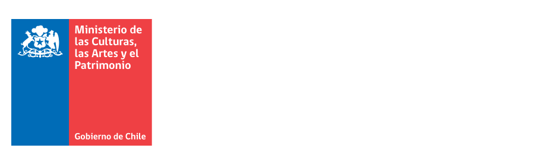
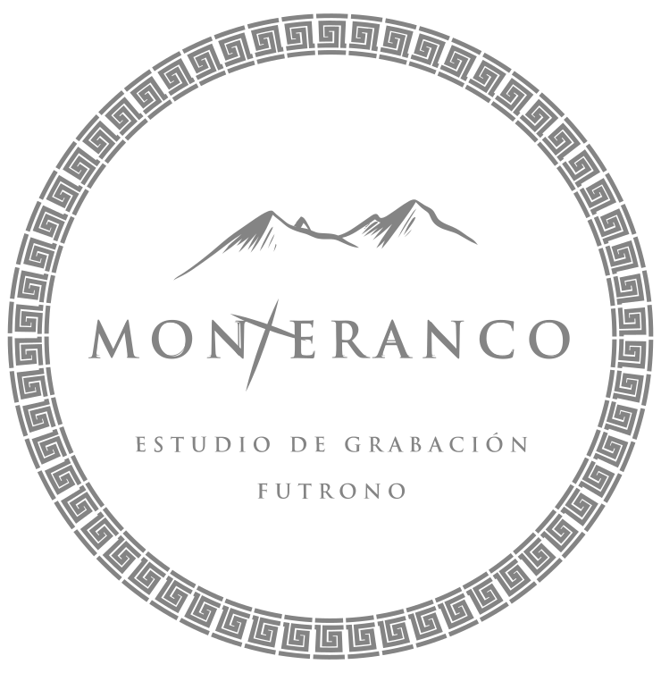

Originaria de Valdivia, Entre Rulos ha construido una propuesta que transita entre el rock progresivo, la psicodelia y diversas sonoridades latinoamericanas, desarrollando una identidad artística donde convergen la experimentación, la autogestión y el trabajo colectivo.
En esta sesión, la banda interpreta parte de su repertorio en vivo y comparte una conversación sobre sus inicios, su evolución musical, la importancia de la organización cultural, los procesos creativos que dan vida a sus composiciones y los nuevos desafíos que marcan esta etapa de su trayectoria.
Grabado en Estudio Monteranco, en Futrono, este capítulo invita a descubrir una propuesta que ha consolidado un camino propio dentro de la escena musical valdiviana, poniendo en valor tanto su trabajo artístico como la mirada comunitaria que inspira cada uno de sus proyectos.

La música del sur vuelve a tomar protagonismo. Después de meses de grabaciones, producción y trabajo colaborativo, estamos felices de anunciar el estreno de la segunda temporada de Sesiones Monteranco, una serie audiovisual creada para registrar, difundir y proyectar las nuevas escenas musicales de la Región de Los Ríos.
Durante este segundo semestre recorreremos las historias, sonidos y procesos creativos de siete bandas y proyectos musicales de la región, a través de capítulos que combinan música en vivo, conversación y registro audiovisual de alta calidad.
Esta temporada es posible gracias al trabajo de un equipo comprometido con la creación y difusión musical desde el sur del mundo.

Grabación
Mezcla
Mastering